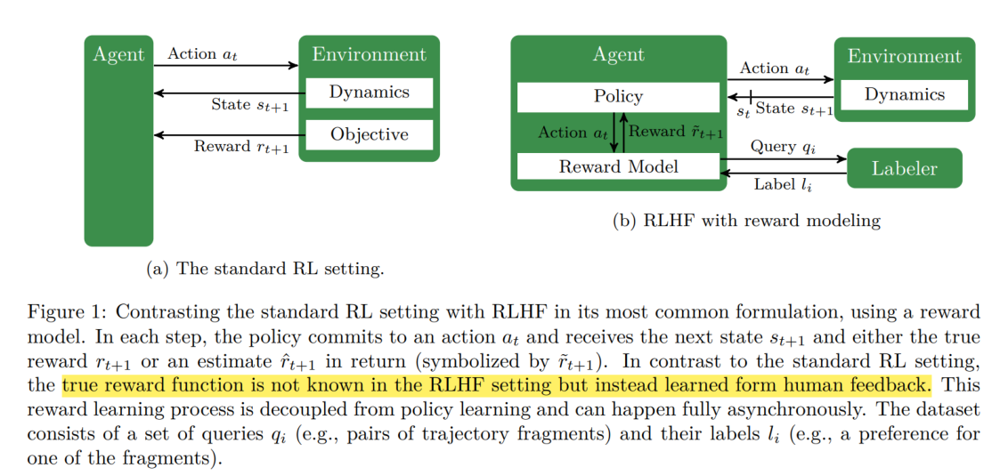
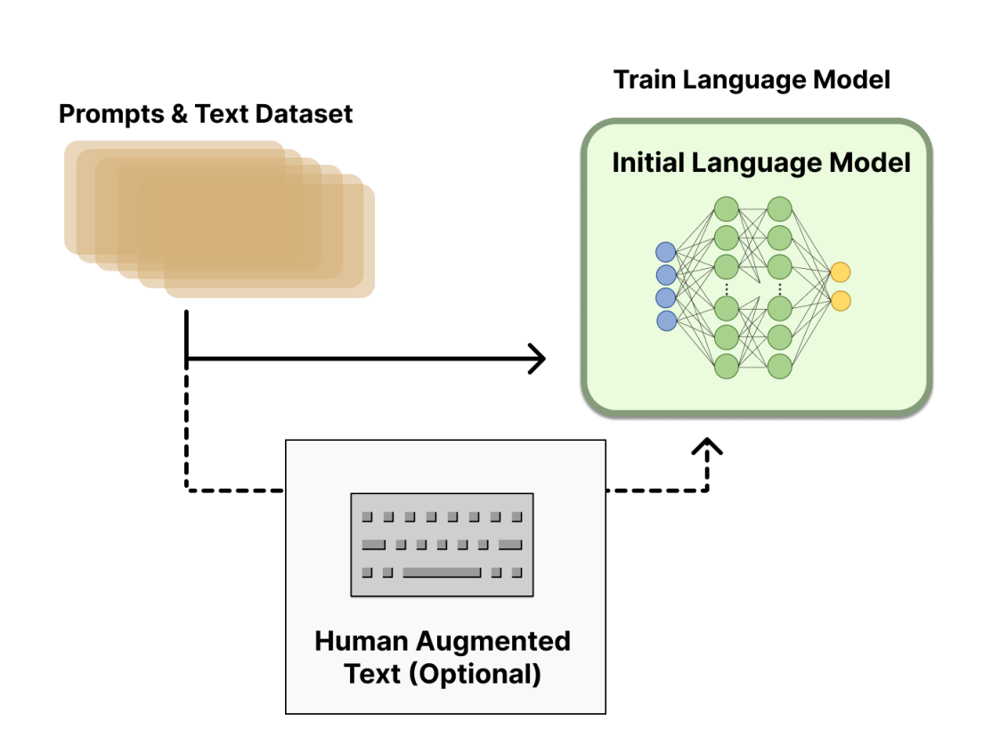
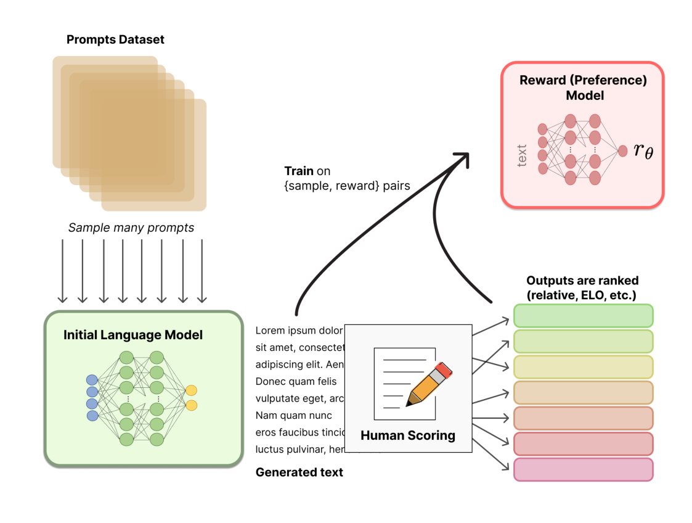
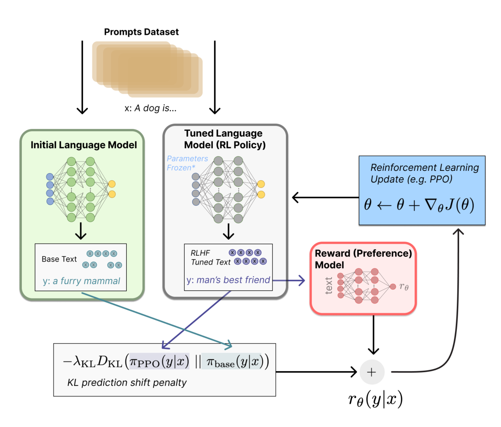

RLHF
随着大语言模型（LLM）规模和能力飞跃，单纯依赖预训练和监督微调难以让模型完全符合人类期 望。 RLHF 通过结合人类反馈和强化学习，显著提升模型的对齐性和输出质量，成为当前 AI 安全和性能优 化的重要手段。
一、RLHF 背景与意义
预训练模型虽能力强大，但容易生成不合适、不准确甚至有害内容。同时传统监督微调虽能提升部分 表现，但无法充分捕捉复杂的人类价值和偏好。所以RLHF应运而生，通过人类反馈信号指导模型，强 化符合人类期望的行为，弥补监督微调的不足。
二、RLHF 的核心流程

1. 数据收集⸺人类反馈标注
人类评审员根据模型生成的多条候选回答，排序或评分，形成偏好数据。

2. 训练奖励模型（Reward Model）
利用人类偏好数据训练一个奖励模型，能够估计给定输出的质量分数。

3. 强化学习微调（Policy Optimization）
以奖励模型为反馈信号，使用强化学习算法（如 PPO）调整语言模型参数，使生成内容更符合人类偏 好。

三、RLHF 的优势与挑战
-
优势
-
直接利用人类偏好进行优化，提升模型输出的自然性和安全性。
-
◦ 灵活适应多样化的价值观和任务需求。
-
挑战
-
人类标注成本高，数据规模受限。
-
奖励模型设计难，可能存在偏差和过拟合风险。
-
强化学习训练过程复杂，需调参保证稳定。
-
四、RLHF 实现细节与技术要点
- 数据格式与偏好对构建
-
偏好对格式：每条训练样本包含相同输入的两个或多个模型生成输出，配有人类标注的优劣顺序。
-
数据清洗：去除低质量标注，保证一致性。
2. 奖励模型训练
-
通常基于预训练语言模型架构，输入为“上下文+生成回答”，输出一个评分标量。
-
采用排序损失（如对比损失、交叉熵排序损失）训练奖励模型，使其能够区分更优回答。
-
定期用人工评估或自动指标验证奖励模型效果。
- 强化学习微调算法
-
典型采用 PPO (Proximal Policy Optimization) 算法，兼顾稳定性和性能。
-
训练目标是最大化奖励模型评分，同时用 KL 散度约束保持与预训练模型的分布接近，防止过拟合 奖励模型或输出退化。
-
训练时需监控奖励分数、KL 值和生成质量，动态调整超参数。
4. 训练流程示例（伪代码）
for batch in training_data:
outputs = policy_model.generate(batch.inputs)
rewards = reward_model(outputs, batch.inputs)
loss = ppo_loss(policy_model, outputs, rewards, kl_coeff)
loss.backward()
optimizer.step()
5. 部署与在线反馈
-
RLHF 训练完成模型可部署于生产环境，持续收集用户反馈。
-
在线反馈可用于后续奖励模型微调和强化学习迭代，形成闭环优化。
五、实战
我们使用自定义数据集，格式类似以下结构：
dataset = load_dataset("csv", data_files="data/custom_train.csv")
print(dataset["train"][0])
示例样本：
1 { 2 "prompt": "写一首关于春天的诗", 3 "response": "春风拂面，百花齐放，燕子呢喃，绿意盎然。" 4 }
这样，每条数据包含 prompt 和 response 字段。 这里选择一个基础的语言模型，并加上 Value Head，用于 PPO 训练。
model_name = "distilgpt2"
tokenizer = AutoTokenizer.from_pretrained(model_name)
model = AutoModelForCausalLMWithValueHead.from_pretrained(model_name)
设置训练参数：
config = PPOConfig(
batch_size=16,
learning_rate=1.41e-5,
log_with="tensorboard",
project_kwargs={"logging_dir": "./logs"},
)
奖励模型用于对模型输出打分。在 Notebook 中，奖励函数采用了一个简单的打分逻辑（例如基于长 度、关键字等规则），你也可以换成训练好的 Reward Model。
示例自定义奖励函数：
def compute_reward(text):
# 简单示例：鼓励长文本
return len(text.split()) / 50.0
在实际应用中，可以加载预训练的 Reward Model，例如基于 BERT 或 RoBERTa ，对输出进行更 细致的质量判断。
训练流程如下：
1ppo_trainer = PPOTrainer(
config=config,
model=model,
tokenizer=tokenizer,
dataset=dataset["train"]
)
for batch in dataset["train"]:
query = batch["prompt"]
response = model.generate(**tokenizer(query, return_tensors="pt"))
response_text = tokenizer.decode(response[0], skip_special_tokens=True)
reward = compute_reward(response_text)
-
14
-
15 ppo_trainer.step([query], [response_text], [reward])
训练过程中，模型会不断优化，使得生成结果更符合奖励模型的偏好。
训练完成后，可以直接使用模型进行推理：
1 prompt = "请写一段关于人工智能的励志短文"
inputs = tokenizer(prompt, return_tensors="pt")
outputs = model.generate(**inputs, max_new_tokens=100)
print(tokenizer.decode(outputs[0], skip_special_tokens=True))
生成效果会比原始模型更贴近我们设定的目标。